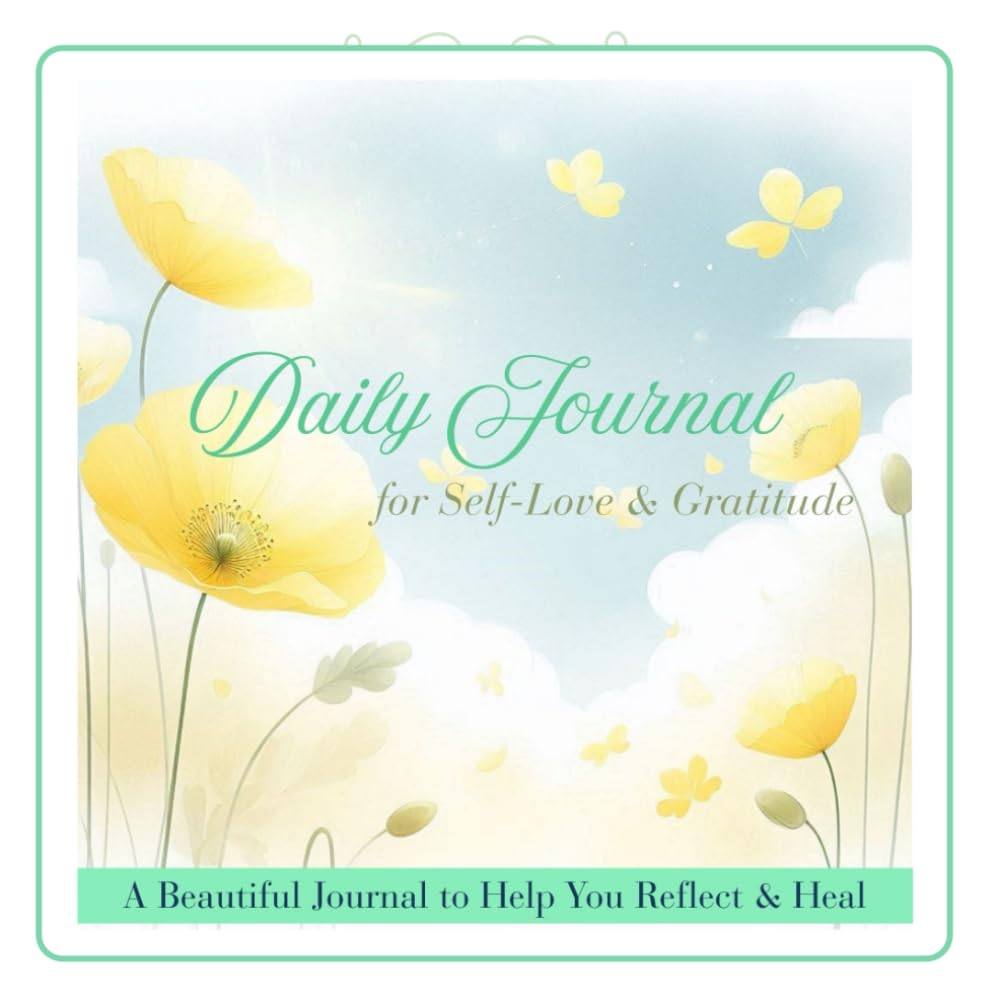

Daily Journal for Self-Love and Gratitude: A Soft Space for Daily Reflection and Healing Prompts
by Light & Love (MW)

A gentle daily journal designed to help you nurture self-love , practice gratitude , and support your emotional well-being. With uplifting prompts and mindful reflections, this journal is your peaceful space to slow down, reconnect with your heart, and celebrate the beauty of everyday life. Perfect for anyone on a journey of healing, self-discovery, and personal growth.
Paperback · 84 pages